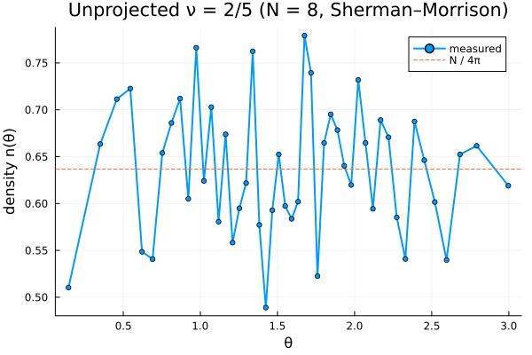

4. Unprojected states and fast Sherman–Morrison updates
The unprojected CF wavefunction $\det[Y_{Q^\star,l,m}(\Omega_i)]\,\prod(u_jv_k-u_kv_j)^p$ is built from single-particle monopole-harmonic orbitals (Ψunproj). Because moving one particle changes only one column of the Slater determinant, the determinant ratio and inverse can be tracked by a rank-1 Sherman–Morrison update — turning the per-step cost from $O(N^3)$ (a fresh logdet) into $O(N)$ for the acceptance ratio plus $O(N^2)$ for the inverse refresh.
(This shortcut is not available for the projected Ψproj: there the elementary symmetric polynomials couple all particles, so one move changes every column. See Architecture.)
using CFsOnSphere
using Random
using LinearAlgebra
LinearAlgebra.BLAS.set_num_threads(1)
using Plots
gr()Plots.GRBackend()The Sherman–Morrison sampling loop
We thermalize with the generic driver (which uses logdet), then switch to the accelerated inner loop: maintain the inverse on the accepted state with initialize_inverse!, get each acceptance ratio from slater_det_ratio, and on acceptance apply update_inverse! before copying the state across.
function sample_unprojected(N, n, p; seed = 4, n_therm = 5_000, n_steps = 20_000, n_bins = 48)
Qstar, l_m_list = cf_ground_state_lm(N, n, p)
system_size = length(l_m_list)
rng = MersenneTwister(seed)
ψ = Ψunproj(Qstar, p, system_size, l_m_list)
ψ_next = Ψunproj(Qstar, p, system_size, l_m_list)
logpdf(ψ) = 2.0 * real(logdet(ψ.slater_det) + ψ.jastrow_factor_log)
θ, ϕ = rand_θ_ϕ_gen(rng, system_size)
θ_next, ϕ_next = copy(θ), copy(ϕ)
σ = π / sqrt(12)
sampling_iter, σ, _, _ = gibbs_thermalization!(rng, ψ, ψ_next, θ, ϕ, θ_next, ϕ_next, σ, logpdf, n_therm)
initialize_inverse!(ψ) # maintain the inverse on the accepted state
temp = zeros(ComplexF64, system_size)
θmesh = acos.(LinRange(1.0, -1.0, n_bins + 1))
Agrid = 2π .* (cos.(θmesh[1:end-1]) .- cos.(θmesh[2:end]))
density = zeros(Float64, n_bins)
accepted = 0
for _ in 1:n_steps
i = sampling_iter
θ_next[i], ϕ_next[i] = proposal(rng, θ[i], ϕ[i], σ)
update_wavefunction!(ψ_next, θ_next[i], ϕ_next[i], i)
det_ratio = slater_det_ratio(ψ, ψ_next, i) # O(N)
δ = 2.0 * real(log(det_ratio) + ψ_next.jastrow_factor_log - ψ.jastrow_factor_log)
if δ >= log(rand(rng))
θ[i], ϕ[i] = θ_next[i], ϕ_next[i]
update_inverse!(ψ, ψ_next, i, det_ratio, temp) # O(N²), before copy!
copy!(ψ, ψ_next, i)
accepted += 1
else
θ_next[i], ϕ_next[i] = θ[i], ϕ[i]
copy!(ψ_next, ψ, i)
end
update_density!(θmesh, θ, density)
sampling_iter = mod(sampling_iter, system_size) + 1
end
θc = 0.5 .* (θmesh[1:end-1] .+ θmesh[2:end])
return θc, density ./ n_steps ./ Agrid, accepted / n_steps
endsample_unprojected (generic function with 1 method)We sample the unprojected $\nu = 2/5$ state (n = 2, p = 2) for N = 8 electrons (a closed shell, so the determinant is square and the inverse can be maintained).
θc, dens, accept = sample_unprojected(8, 2, 2)
@show accept;
plot(θc, dens; lw=2, marker=:circle, ms=3, label="measured",
xlabel="θ", ylabel="density n(θ)", title="Unprojected ν = 2/5 (N = 8, Sherman–Morrison)")
hline!([8 / (4π)]; ls=:dash, label="N / 4π")
This page was generated using Literate.jl.